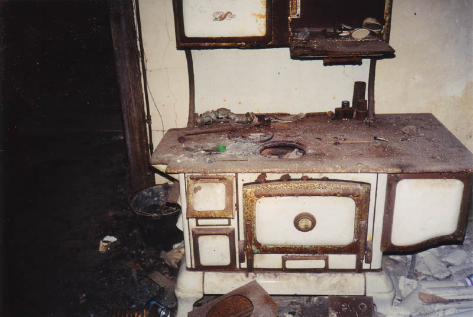
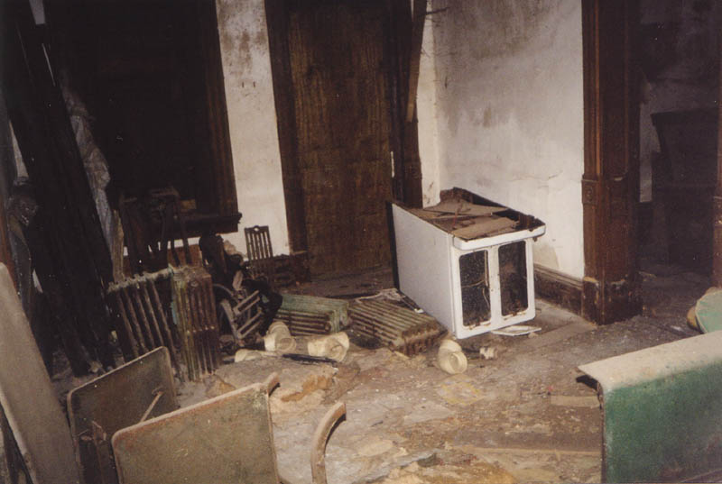
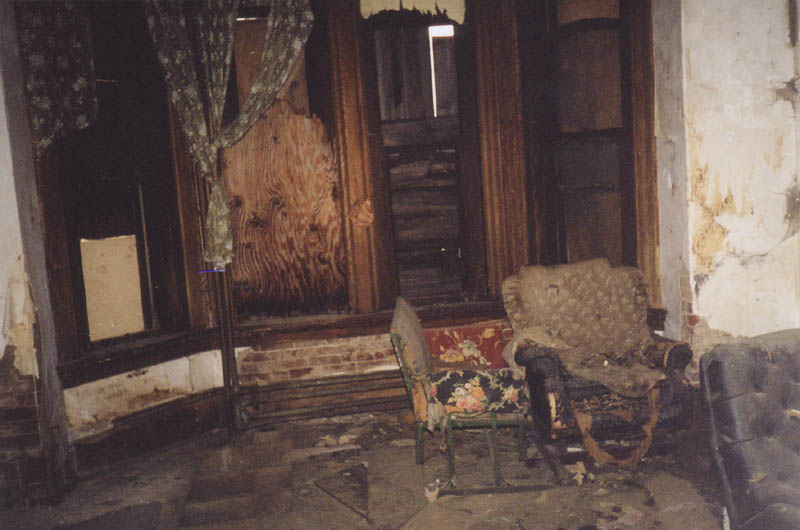
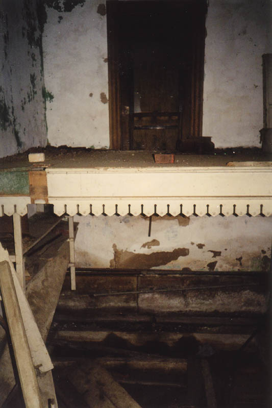
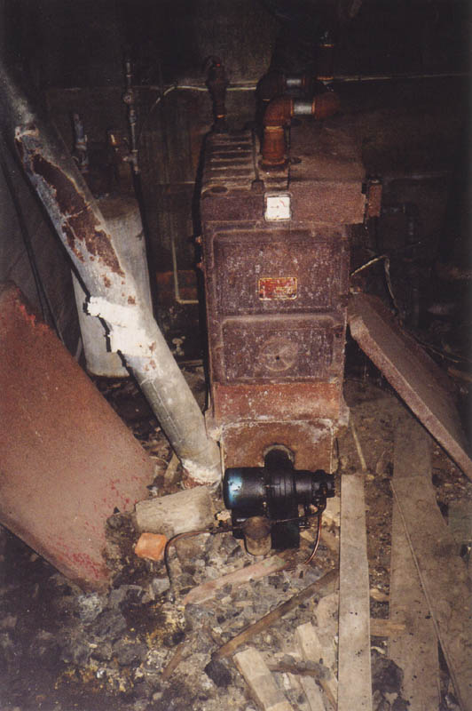
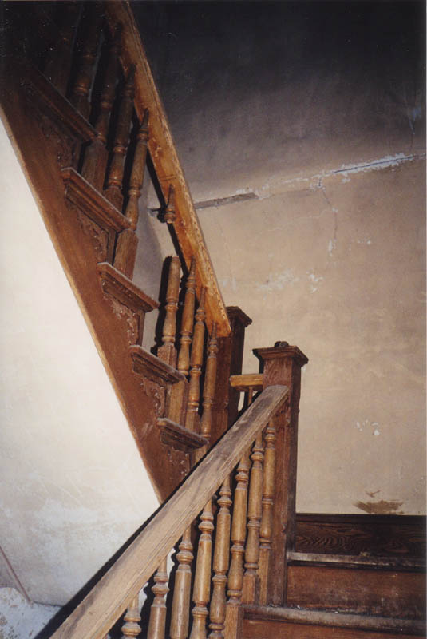

Now we step inside Mudhouse Mansion for a look at the interior. The way I always get in is through an unboarded window on the back porch. The last time I went, we found a board loosely nailed across this window. While we were pulling it off we realized that we could hear an angry buzzing coming from somewhere nearby. It went away, then started up again when we made more noise working on the board. We realized it was coming from inside the porch roof--wasps or bees or something nasty, disturbed in their sleep. Being chickens, we decided to leave and didn't go into the Mansion that night. But the cold weather should solve that particular problem.

The house is built into a hill, so it's hard to tell the first floor from the basement. One one side it's the ground floor, while on the other side it's below ground level. So I'll just call the lowest level the first floor, the middle level the second floor, and the highest level the third floor. Depending on how you look at it, Mudhouse is either a two-story or a three-story house. No matter how you look at it, though, it's an impressive place. With all this space and such nice property, you have to wonder why it was ever left to rot like this.

The biggest room on floor one is a sort of living room with the windows boarded over. It's pictured above.

But the weirdest room is this one. If you can't tell, it's a sort of bi-level room, built like bunk beds with a partial floor halfway up. The dropped floor is much lower than in the rest of the house, and is flooded with nasty water, which makes me wonder if it collapsed at some point. But the upper level is still higher than door level. I have no idea what the story is with this.

This is a furnace type thing in the kitchen. One of the coolest things I found in Mudhouse was a book of checks, some of which dated back to the 1930s. I found it in the kitchen, where most of the appliances still remain. I would advise you not to open the refrigerator in any abandoned building, since you're either going to find foul, stagnant water or a chopped-up human body, and either way, it stinks. Abandoned refrigerators always stink.
Click below to continue to the upper floors.

Continue...
Back